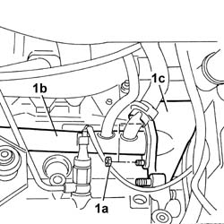
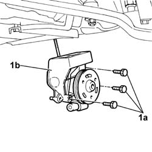

1088C10 WATER PUMP - R + R
- Path
- Procedures > 10 ENGINE UNIT > 1088 ENGINE COOLING > 1088C WATER PUMP AND THERMOSTAT > 1088C10 WATER PUMP - R + R
- Kind
- repair procedure (removal / refitting; the operation number is the code)
- Applies to
- engines: 2.0 JTD 8V, 2.3 JTD 16V, 2.8 JTD 8V; all production periods
- Interactive page
- https://sloeber94.github.io/elrnDB-fDct/en/#/244000947
Applies to: engines: 2.8 JTD 8V; all production periods
 Removing
Removing
 Refitting
RefittingOp. 7055B54 UNDER-ENGINE GUARD - R R
Op. 0010T84 COOLANT FOR AIR CONDITIONING SYSTEM DEHYDRATE AND RECHARGE
Op. 0010T20 COOLANT CHECK DENSITY AND TOP UP IF NECESSARY
See in Op. 1008B10
See in Op. 1032D12
Op. 1092D10 AIR CONDITIONER COMPRESSOR DRIVE BELT - R + R
Op. 1092B51 ALTERNATO/WATER PUMP DRIVE BELT - R+R FOR VERSIONS WITH AIR CONDITIONER
See in Op. 1092A12
See in Op. 1032B14
Op. 5530A14 ALTERNATOR - R+R FOR VERSIONS WITH AIR CONDITIONER
1. Undo the nuts (1a) fixing the rigid pipe (1b) to the water pump (1c).

Applies to: engines: 2.8 JTD 8V; all production periods
1. Undo the fixing bolts (1a) and remove the water pump (1b).

Applies to: engines: 2.8 JTD 8V; all production periods
Refitting
Removing- Place the water pump in position and tighten the bolts checking the torque.
 | Value - daNm | Fastening | Component | Ø |
|---|---|---|---|---|
. | 5 | Bolt | COOLANT PUMP | M10 X 1.25 |
- Tighten the nuts fixing the rigid pipe to the water pump checking the torque.
| Value - daNm | Fastening | Component | Ø |
|---|---|---|---|---|
. | 2,5 | Nut | COOLANT PUMP RIGID INLET PIPE | M8 X 1,25 |
Op. 5530A14 ALTERNATOR - R+R FOR VERSIONS WITH AIR CONDITIONER
See in Op. 1032B14
See in Op. 1092A12
Op. 1092B51 ALTERNATO/WATER PUMP DRIVE BELT - R+R FOR VERSIONS WITH AIR CONDITIONER
Op. 1092D10 AIR CONDITIONER COMPRESSOR DRIVE BELT - R + R
See in Op. 1032D12
See in Op. 1008B10
Op. 0010T84 COOLANT FOR AIR CONDITIONING SYSTEM DEHYDRATE AND RECHARGE
Applies to: engines: 2.0 JTD 8V; all production periods
Removing
RefittingOp. 7055B54 UNDER-ENGINE GUARD - R R
Op. 4450B04 RIGHT FRONT WHEEL R R
Op. 1092G10 SINGLE ENGINE BELT R R
See in Op. 1092A10
See in Op. 1032D12
See in Op. 1032B10
See in Op. 1088C14
Applies to: engines: 2.0 JTD 8V; all production periods
Refitting
RemovingSee in Op. 1088C14
See in Op. 1032B10
See in Op. 1032D12
See in Op. 1092A10
Op. 1092G10 SINGLE ENGINE BELT R R
Op. 4450B04 RIGHT FRONT WHEEL R R
Op. 0010T20 COOLANT CHECK DENSITY AND TOP UP IF NECESSARY
Op. 7055B54 UNDER-ENGINE GUARD - R R
- Remove the vehicle from the lift.
Applies to: engines: 2.3 JTD 16V; all production periods
See in Op. 1060E40
Topics linked from this page (9)
- 0010T20 COOLANT CHECK DENSITY AND TOP UP IF NECESSARY
- 0010T21 COOLANT CHECK DENSITY AND TOP UP IF NECESSARY
- 0010T84 COOLANT FOR AIR CONDITIONING SYSTEM DEHYDRATE AND RECHARGE
- 1092B51 ALTERNATO/WATER PUMP DRIVE BELT - R+R FOR VERSIONS WITH AIR CONDITIONER
- 1092D10 AIR CONDITIONER COMPRESSOR DRIVE BELT - R + R
- 1092G10 SINGLE ENGINE BELT R R
- 4450B04 RIGHT FRONT WHEEL R R
- 5530A14 ALTERNATOR - R+R FOR VERSIONS WITH AIR CONDITIONER
- 7055B54 UNDER-ENGINE GUARD - R R